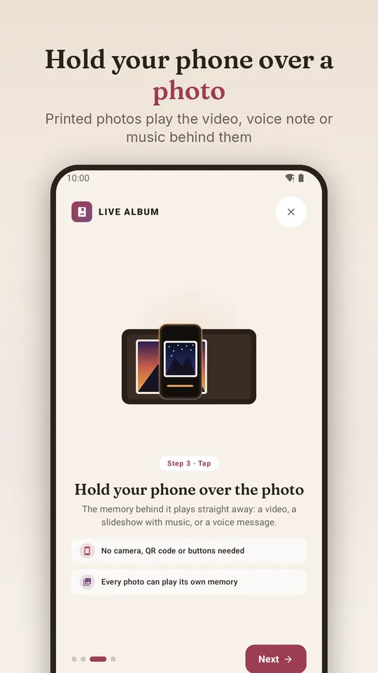
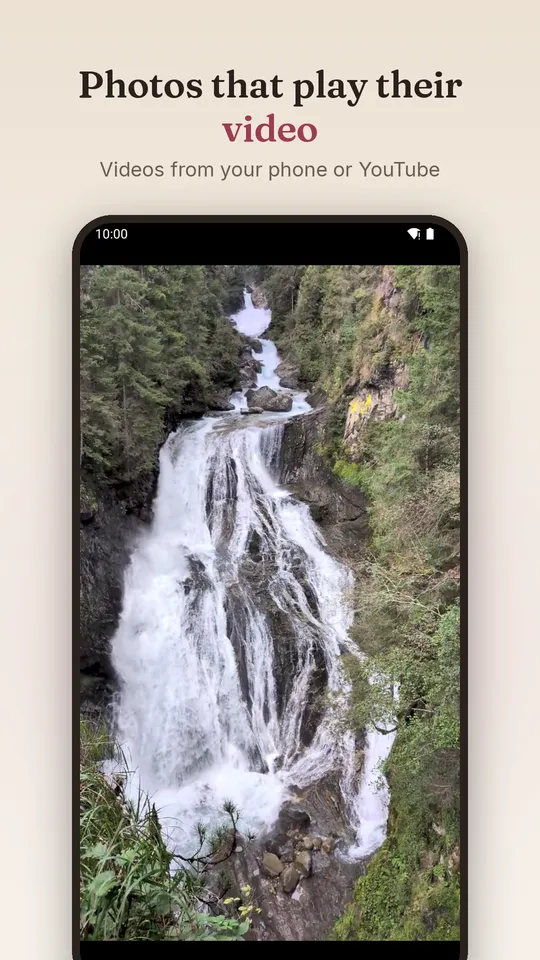
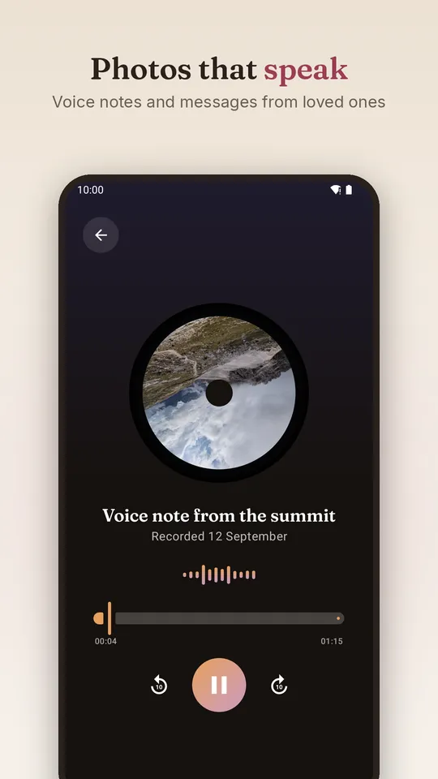
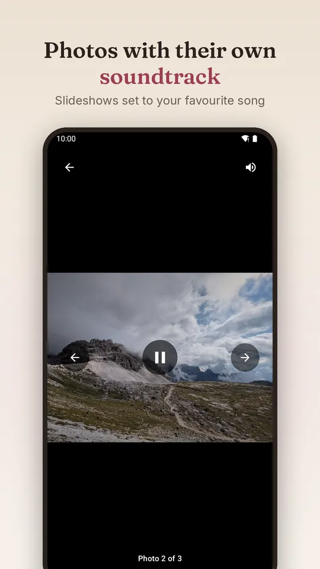
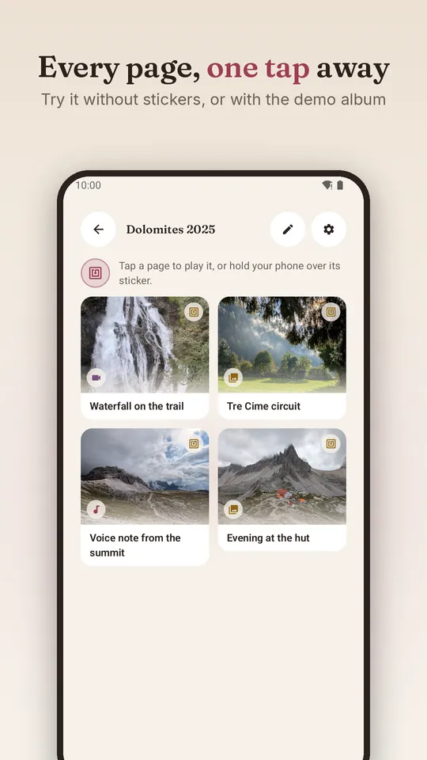
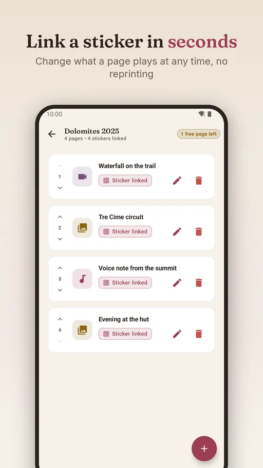
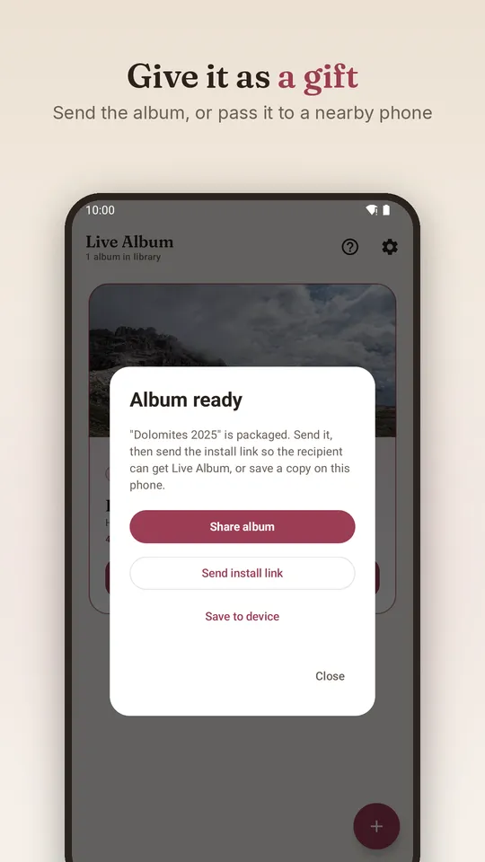

NFC photo album app for Android
Bring printed photo albums to life
Put a small NFC sticker behind a photo and link it to a video, a voice note or a song. Then hold your phone over the photo: the moment plays straight away.
Free to try, with a one-time Pro upgrade. Available in the United Kingdom.







How the NFC photo album works
- Step 1 · StickPut a sticker behind a photoA small NFC sticker (also called an NFC tag) goes on the album page, under the photo. Nobody sees it.
- Step 2 · LinkCreate the page in the appAdd a video, photos with music, or a recording, then hold the sticker to the back of your phone to link it.
- Step 3 · TapHold your phone over the photoThe page plays straight away, even if Live Album is closed. No camera, QR code or buttons.
What a photo can play
Videos
From your phone, or YouTube links.
Voice notes
Messages and recordings in the voices you love.
Slideshows with music
Several photos, set to your favourite song.
Give it as a gift
Made a video photo album for someone? Send the album to them in WhatsApp, email or any other app, or straight to a phone next to you. They install Live Album for free, add the album, and the same stickers play on their phone. Lovely for wedding albums, baby books and travel scrapbooks.
What you need
- An Android phone with NFC.
- NTAG213, NTAG215 or NTAG216 NFC stickers. Round ones of 25–30 mm fit behind most photos.
- For bound albums: a ferrite sheet and a piece of aluminium foil behind each sticker, so only the page you hold your phone over plays.
The guide explains where to put stickers, which ones to buy and what to do if a page doesn't play.
Private by design
Your photos, videos and albums stay on your phone. No account, no ads and no tracking. Live Album works offline once media is added; only online videos such as YouTube need the internet.
Questions
Does the person I give the album to need anything?
An Android phone with NFC and the free Live Album app. They don't need Pro.
Can I change a video after printing the album?
Yes. The sticker stays the same; change what the page plays in the app.
What's free and what's Pro?
Free gives you one album with up to 5 pages and every page type. Pro is a one-time purchase, no subscription, that unlocks unlimited albums and pages. Playing albums you've been given is always free.